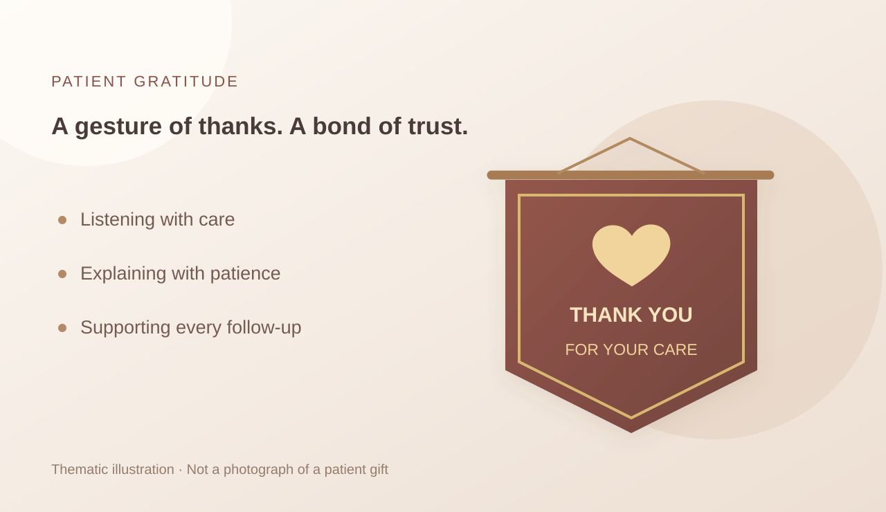

Educational Video
An Introduction to Polysomnography
See the preparation and testing setting in footage from the center.
Learn about sleep monitoring, sleep breathing, positive airway pressure devices, and daytime sleepiness so that professional assessment and daily care are easier to understand.
From the monitoring process and overnight data to sleep cycles, learn which questions testing can help answer.
See the preparation and testing setting in footage from the center.

Learn about overnight data on brain activity, breathing, heart rate, and blood oxygen.
Read the article
Learn about the test measures and how results can support a physician's assessment.
Read the articleAn animation explains overnight sleep structure and its different stages.
Notice changes in breathing at night and the trust between patients and the team.
Footage and animation explain snoring and sleep breathing problems.

A pennant of thanks expresses a patient's gratitude for sleep breathing care and specialist support.
Read the articleAn animated story shows why snoring deserves attention.
The animated story continues and suggests seeking professional assessment when needed.
From mask fit and getting used to the device to discussing discomfort.
Center staff demonstrate steps in fitting a mask and using the device.

Learn about common issues such as mask fit, air leaks, and comfort.
Read the articleLearn about common signs of narcolepsy and when to seek care, with a focus on daytime sleepiness and professional assessment.

Learn about this sleep disorder through a World Narcolepsy Day article.
Read the articleThe first video in an educational series produced by the center.
The second video in an educational series produced by the center.
The third video in an educational series produced by the center.